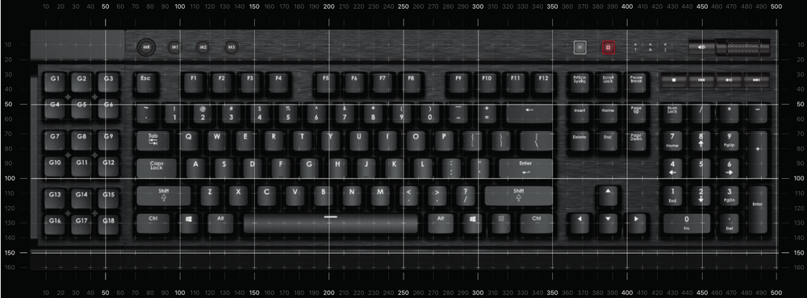
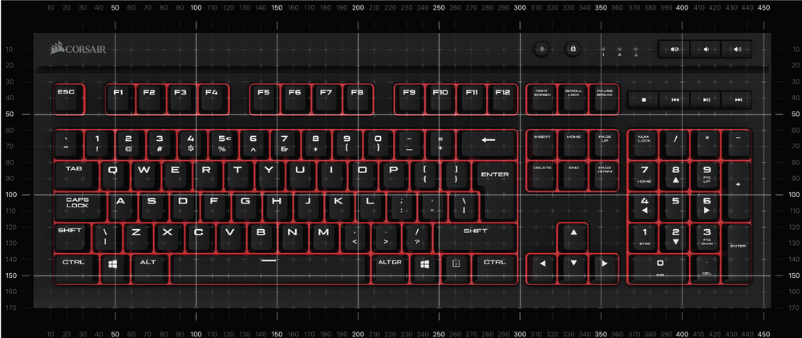
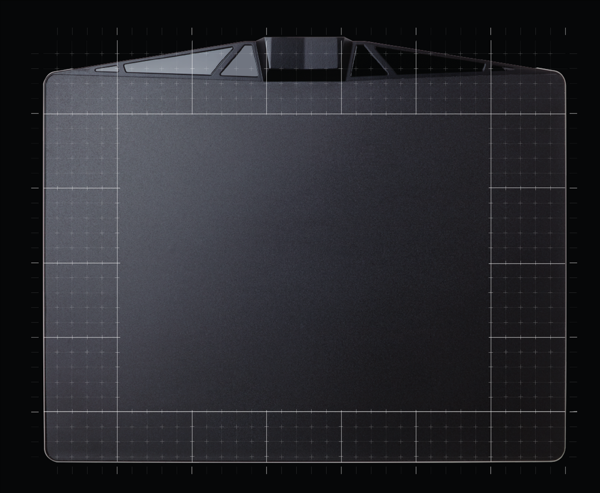

CUE SDK
Overview and Reference
Protocol version 13
Overview
The Corsair Utility Engine (CUE) SDK gives ability for third-party applications to control lightings on Corsair RGB devices. CUE SDK interacts with hardware through CUE so it should be running in order for SDK to work properly.
SDK features are supported in CUE version 1.10 or higher.
To use this SDK you should have basic knowledge in C and library linking.
CUE SDK functional features:
- SDK provides ability to specify/query RGB color for every LED on keyboard, mouse, mouse mat, headset, headset stand, Commander PRO, Lighting Node PRO, memory module and cooler (ie. control lighting by key id)
- SDK provides information about connected hardware: models, physical and logical layouts.
- SDK provides information about HW geometry so that clients can show visual effects that depend on geometry like wave or ripple (ie. control lighting by key position).
- SDK provides helper functions to convert alphanumeric key names (like 'A', 'Q', 'Z') into identifiers for "tutorial" kind of clients that want to highlight exact keys taking into account logical layout (ie. control lighting by key name).
- SDK provides exclusive and shared access to SDK clients.
- SDK provides layers for shared clients so they can ensure that colors set by them are shown on top of CUE colors if this is needed
- SDK provides information about G keys pressed on the keyboard or M keys pressed on the mouse
- User can forbid third-party applications to control lighting in CUE settings.
Other SDK features:
- CUE works properly with multiple clients. SDK library itself is thread safe so that clients are able to use it from multiple threads within the same process.
- SDK is fail-safe. If CUE is not present, shuts down by the user or crashes this does not cause a client crashing or hanging.
- SDK handles handshake during client initialization to agree on protocol version that CUE implements, so that CUE can decide if it supports client protocol version and client can decide which of API functions it can call.
SDK Package
The following folders are included:
- include contains C/C++ header files with function prototypes and enum declarations;
- redist contains both 32 and 64 bit .dll files;
- lib contains companion .lib files to access exported functions (32 and 64 bit);
- examples contains sample project that shows how to use SDK;
- doc contains SDK documentation (this document).
Requirements
This SDK can be used on the following platforms:
- Windows 7 (32-bit and 64-bit);
- Windows 8, 8.1 (32-bit and 64-bit);
- Windows 10 (32-bit and 64-bit);
- macOS 10.13;
- macOS 10.14;
- macOS 10.15.
Supported devices
- Keyboards:
- CGK65 RGB
- K65 LUX RGB
- K65 RGB RAPIDFIRE
- K70 RGB
- K70 LUX
- K70 RAPIDFIRE
- K70 LUX RGB
- K70 RGB RAPIDFIRE
- K95 RGB
- STRAFE
- STRAFE RGB
- K63
- K68
- K95 RGB PLATINUM
- K55 RGB
- Mice:
- M65 RGB
- M65 PRO RGB
- SABRE
- SABRE RGB
- SABRE RGB Optical
- SABRE RGB Laser
- Scimitar
- GLAIVE RGB
- Scimitar PRO RGB
- KATAR
- HARPOON RGB
- HARPOON RGB PRO
- Mouse Mat:
- MM800 RGB
- Headsets:
- VOID USB
- VOID WIRELESS
- VOID PRO USB
- VOID PRO WIRELESS
- Headset Stand:
- ST100 RGB
- LED Controllers:
- Lighting Node PRO
- Commander PRO
- Memory module:
- Vengeance RGB PRO
- DOMINATOR PLATINUM RGB
- Coolers:
- H100i PRO
- H115i PRO
- H150i PRO
- H100i Platinum
- H115i Platinum
- CORSAIR ONE
- CORSAIR ONE PRO
Multiple clients using the SDK at the same time
SDK provides exclusive and shared access to SDK clients.
- Exclusive access - lighting controlled only by client and not by CUE or other SDK clients. There can be only one exclusive client at a time. If there is already an active exclusive client A and a new client B requests exclusive access to the lighting then client B becomes exclusive client and client A loses exclusive control (i.e. "last win" strategy).
- Shared access - multiple clients may control lighting at the same time, optionally choosing theirs layer priority from interval [0..255]. There can be unlimited number of shared clients working simultaneously. If some client requests exclusive access then all other shared clients will not be able to override colors that were set by exclusive client. When exclusive client disconnects all shared clients can override colors again.
- CUE itself acts like a shared client with layer priority 127, so if there is a client taking over exclusive control then CUE will not try to override colors.
The default access mode is shared.
Other considerations
Single-color devices
If a connected device only has LEDs of one color instead of all three (RGB) then when RGB color is set to such leds SDK chooses maximum of three (RGB) values and uses it as brightness for LED.
On/off leds
If a connected device has some LEDs that support only on/off control then if supplied brightness value is >= 128 such LED will be switched on, otherwise it will be switched off.
LEDs that are not controlled by SDK
Side LEDs on Corsair STRAFE keyboards can not be controlled by SDK. These LEDs remain controlled by CUE regardless of connected SDK clients. Some devices have a certain number of service LED indicators (for example, WinLock or Profile LEDs on keyboards) and depending on device model CUE may, optionally or unconditionally, prohibit controlling these LEDs by SDK. If, however, despite the prohibition on controlling the service LEDs, SDK tries to set a color for them, the new color settings will be ignored for these service LEDs without an error.
Memory management
SDK is responsible for freeing memory that was allocated by its functions. The memory is freed when SDK library is unloaded.
Win+L
CUE should preserve communication channels with SDK clients when user locks screen, so when user session is restored and set of connected devices is unchanged the client can continue using SDK as if session was never locked.
For all G/M keys which are in a pressed state at the time user locks screen CUE should notify client application that these keys have been released.
Reference
CorsairSetLedsColors
bool CorsairSetLedsColors(int size, CorsairLedColor* ledsColors);
Description: set specified leds to some colors. The color is retained until changed by successive calls. This function does not take logical layout into account. This function executes synchronously, if you are concerned about delays consider using CorsairSetLedsColorsAsync
Input arguments:
- int size - number of leds in ledsColors array;
- CorsairLedColor* ledsColors - array containing colors for each LED.
Returns: boolean value. True if successful. Use CorsairGetLastError() to check the reason of failure. If there is no such ledId present in currently connected hardware (missing key in physical keyboard layout, or trying to control mouse while it's disconnected) then function completes successfully and returns true.
Possible errors:
- CE_ServerNotFound, CE_NoControl, CE_ProtocolHandshakeMissing
- CE_InvalidArguments - if some of r, g, b values are beyond [0..255] interval or array contains duplicates of some led ids.
CorsairSetLedsColorsBufferByDeviceIndex
bool CorsairSetLedsColorsBufferByDeviceIndex(int deviceIndex, int size, CorsairLedColor* ledsColors);
Description: set specified LEDs to some colors. This function set LEDs colors in the buffer which is written to the devices via CorsairSetLedsColorsFlushBuffer or CorsairSetLedsColorsFlushBufferAsync. Typical usecase is next: CorsairSetLedsColorsFlushBuffer or CorsairSetLedsColorsFlushBufferAsync is called to write LEDs colors to the device and follows after one or more calls of CorsairSetLedsColorsBufferByDeviceIndex to set the LEDs buffer. This function does not take logical layout into account.
Input arguments:
- int deviceIndex - zero-based index of device. Should be strictly less than value returned by CorsairGetDeviceCount()
- int size - number of leds in ledsColors array
- CorsairLedColor* ledsColors - array containing colors for each LED.
Returns: boolean value. True if successful. Use CorsairGetLastError() to check the reason of failure. If there is no such ledId present in currently connected hardware (missing key in physical keyboard layout, or trying to control mouse while it's disconnected) then functions completes successfully and returns true.
Possible errors:
- CorsairErrorServerNotFound, CorsairErrorProtocolHandshakeMissing
- CorsairErrorInvalidArguments - if some of r, g, b values are beyond [0..255] interval or array contains duplicates of some led ids.
CorsairSetLedsColorsFlushBuffer
bool CorsairSetLedsColorsFlushBuffer();
Description: writes to the devices LEDs colors buffer which is previously filled by the CorsairSetLedsColorsBufferByDeviceIndex function. This function executes synchronously, if you are concerned about delays consider using CorsairSetLedsColorsFlushBufferAsync
Input arguments: no.
Returns: boolean value. True if successful. Use CorsairGetLastError() to check the reason of failure. If there is no such ledId in the LEDs colors buffer present in currently connected hardware (missing key in physical keyboard layout, or trying to control mouse while it's disconnected) then functions completes successfully and returns true.
Possible errors:
- CorsairErrorServerNotFound, CorsairErrorNoControl, CorsairErrorProtocolHandshakeMissing
CorsairSetLedsColorsFlushBufferAsync
bool CorsairSetLedsColorsFlushBufferAsync(void (*callback) (void *context, bool result, CorsairError error), void *context);
Description: same as CorsairSetLedsColorsFlushBuffer but returns control to the caller immediately.
Input arguments:
- void (*callback)(void *context, bool result, CorsairError error) - callback that is called by SDK when colors are set. Can be NULL if client is not interested in result;
- context contains value that was supplied by user in CorsairSetLedsColorsFlushBufferAsync call;
- result is true if call was successful, otherwise false;
- error contains error code if call was not successful (result==false) Possible errors: CorsairErrorServerNotFound, CorsairErrorNoControl
- void *context - arbitrary context that will be returned in callback call. Can be NULL
Returns: boolean value. True if successful. Use CorsairGetLastError() to check the reason of failure. If there is no such ledId in the LEDs colors buffer present in currently connected hardware (missing key in physical keyboard layout, or trying to control mouse while it's disconnected) then functions completes successfully and returns true.
Possible errors:
- CorsairErrorProtocolHandshakeMissing
CorsairSetLedsColorsAsync
bool CorsairSetLedsColorsAsync(int size, CorsairLedColor* ledsColors, void(*CallbackType)(void*, bool, CorsairError), void *context);
Description: same as CorsairSetLedsColors but returns control to the caller immediately.
Input arguments:
- int size - number of leds in ledsColors array;
- CorsairLedColor* ledsColors - array containing colors for each LED;
- void (*CallbackType)(void* context, bool result, CorsairError error) - callback that is called by SDK when colors are set. Can be NULL if client is not interested in result:
- context contains value that was supplied by user in CorsairSetLedsColorsAsync call;
- result is true if call was successful, otherwise false;
- error contains error code if call was not successful (result==false); Possible errors: CE_ServerNotFound, CE_NoControl
- void* context - arbitrary context that will be returned in callback call. Can be NULL.
Returns: boolean value. True if successful. Use CorsairGetLastError() to check the reason of failure.
Possible errors:
- CE_ProtocolHandshakeMissing
- CE_InvalidArguments - if some of r, g, b values are beyond [0..255] interval or array contains duplicates of some led ids.
CorsairGetLedsColors
bool CorsairGetLedsColors(int size, CorsairLedColor* ledsColors);
Description: get current color for the list of requested LEDs. The color should represent the actual state of the hardware LED, which could be a combination of SDK and/or CUE input. This function works only for keyboard, mouse, mousemat, headset and headset stand devices.
Input arguments:
- int size - number of leds in ledsColors array;
- CorsairLedColor* ledsColors - array containing colors for each LED. Caller should only fill ledId field, and then SDK will fill R, G and B values on return;
Returns: boolean value. True if successful. Use CorsairGetLastError() to check the reason of failure. If there is no such ledId present in currently connected hardware (missing key in physical keyboard layout, or trying to control mouse while it's disconnected) then functions completes successfully and returns true.
Also ledsColors array will contain R, G and B values of colors on return.
Possible errors:
- CorsairErrorServerNotFound, CorsairErrorProtocolHandshakeMissing
- CorsairErrorInvalidArguments - if array contains duplicates of some led ids.
CorsairGetLedsColorsByDeviceIndex
bool CorsairGetLedsColorsByDeviceIndex(int deviceIndex, int size, CorsairLedColor* ledsColors);
Description: get current color for the list of requested LEDs. The color should represent the actual state of the hardware LED, which could be a combination of SDK and/or CUE input. This function works for keyboard, mouse, mousemat, headset, headset stand, DIY-devices, memory module and cooler.
Input arguments:
- int deviceIndex - zero-based index of device. Should be strictly less than value returned by CorsairGetDeviceCount()
- int size - number of LEDs in ledsColors array;
- CorsairLedColor* ledsColors - array containing colors for each LED. Caller should only fill ledId field, and then SDK will fill R, G and B values on return.
Returns: boolean value. True if successful. Use CorsairGetLastError() to check the reason of failure. If there is no such ledId present in currently connected hardware (missing key in physical keyboard layout, or trying to control mouse while it's disconnected) then functions completes successfully and returns true. Also ledsColors array will contain R, G and B values of colors on return.
Possible errors:
- CE_ServerNotFound, CE_ProtocolHandshakeMissing
- CE_InvalidArguments - if array contains duplicates of some LED ids.
CorsairGetBoolPropertyValue
bool CorsairGetBoolPropertyValue(int deviceIndex, CorsairDevicePropertyId propertyId, bool* propertyValue);
Description: reads boolean property value for device at provided index.
Input arguments:
- int deviceIndex - zero-based index of device. Should be strictly less than value returned by CorsairGetDeviceCount()
- CorsairDevicePropertyId propertyId - id of property to read from device;
- bool* propertyValue - pointer to memory where to store boolean property value read from device.
Returns: boolean value. True if successful. Use CorsairGetLastError() to check the reason of failure.
Possible errors:
- CE_ServerNotFound, CE_ProtocolHandshakeMissing
- CE_IncompatibleProtocol - if the function was called for SDK that implements protocol version 5 or earlier;
- CE_InvalidArguments - if deviceIndex is invalid, type of property (specified by propertyId) is not boolean, device does not support CDC_PropertyLookup`capability or `propertyId is not supported by device.
CorsairGetInt32PropertyValue
bool CorsairGetInt32PropertyValue(int deviceIndex, CorsairDevicePropertyId propertyId, int* propertyValue);
Description: reads integer property value for device at provided index.
Input arguments:
- int deviceIndex - zero-based index of device. Should be strictly less than value returned by CorsairGetDeviceCount()
- CorsairDevicePropertyId propertyId - id of property to read from device;
- int* propertyValue - pointer to memory where to store integer property value read from device.
Returns: boolean value. True if successful. Use CorsairGetLastError() to check the reason of failure.
Possible errors:
- CE_ServerNotFound, CE_ProtocolHandshakeMissing
- CE_IncompatibleProtocol - if the function was called for SDK that implements protocol version 5 or earlier;
- CE_InvalidArguments - if deviceIndex is invalid, type of property (specified by propertyId) is not integer, device does not support CDC_PropertyLookup capability or propertyId is not supported by device.
CorsairSetLayerPriority
bool CorsairSetLayerPriority(int priority);
Description: set layer priority for this shared client. By default CUE has priority of 127 and all shared clients have priority of 128 if they don't call this function. Layers with higher priority value are shown on top of layers with lower priority.
Input arguments:
- int priority - priority of a layer [0..255];
Returns: boolean value. True if successful. Use CorsairGetLastError() to check the reason of failure. If this function is called in exclusive mode then it will return true.
Possible errors:
- CorsairErrorServerNotFound, CorsairErrorProtocolHandshakeMissing
- CorsairErrorInvalidArguments - if priority value is beyond [0..255] interval.
CorsairSubscribeForEvents
bool CorsairSubscribeForEvents(void(*CorsairEventHandler) (void *context, const CorsairEvent *event), void *context);
Description: registers a callback that will be called by SDK when some event happened. If client is already subscribed but calls this function again SDK should use only last callback registered for sending notifications.
Input arguments:
- void(*CorsairEventHandler)(void *context, const CorsairEvent *event) - callback that is called by SDK when key is pressed or released
- context contains value that was supplied by user in CorsairSubscribeForEvents call;
- CorsairEvent *event - information about event, user can distinguish between events by reading event->id field;
- void* context - arbitrary context that will be returned in callback call. Can be NULL
Returns: boolean value. True if successful. Use CorsairGetLastError() to check the reason of failure.
Possible errors:
- CE_ServerNotFound, CE_ProtocolHandshakeMissing
- CE_InvalidArguments - if callback is NULL
CorsairUnsubscribeFromEvents
bool CorsairUnsubscribeFromEvents();
Description: unregisters callback previously registered by CorsairSubscribeForEvents call.
Input arguments: no.
Returns: boolean value. True if successful. Use CorsairGetLastError() to check the reason of failure.
Possible errors:
- CE_ServerNotFound, CE_ProtocolHandshakeMissing
CorsairGetDeviceCount
int CorsairGetDeviceCount();
Description: returns number of connected Corsair devices. For keyboards, mice, mousemats, headsets and headset stands not more than one device of each type is included in return value in case if there are multiple devices of same type connected to the system. For DIY-devices and coolers actual number of connected devices is included in return value. For memory modules actual number of connected modules is included in return value, modules are enumerated with respect to their logical position (counting from left to right, from top to bottom).
Use CorsairGetDeviceInfo() to get information about a certain device.
Input arguments: no.
Returns: integer value. -1 in case of error.
Possible errors:
- CE_ServerNotFound, CE_ProtocolHandshakeMissing
CorsairGetDeviceInfo
CorsairDeviceInfo *CorsairGetDeviceInfo(int deviceIndex);
Description: returns information about a device based on provided index.
Input arguments:
- int deviceIndex - zero-based index of device. Should be strictly less than a value returned by CorsairGetDeviceCount()
Returns: pointer to CorsairDeviceInfo structure that contains information about device or NULL pointer if error has occurred.
Possible errors:
- CE_ServerNotFound, CE_ProtocolHandshakeMissing
- CE_InvalidArguments - if deviceIndex is invalid.
CorsairDeviceId
typedef char CorsairDeviceId[CORSAIR_DEVICE_ID_MAX]
Description: defines a character array of length CORSAIR_DEVICE_ID_MAX (== 128) to store device identifier string.
CorsairGetLedPositions
CorsairLedPositions *CorsairGetLedPositions();
Description: provides list of keyboard LEDs with their physical positions. Coordinates grids for different device models can be found in Device coordinates.
Input arguments: no.
Returns: returns pointer to CorsairLedPositions struct or NULL if error has occurred.
Possible errors:
- CE_ServerNotFound, CE_ProtocolHandshakeMissing
CorsairGetLedPositionsByDeviceIndex
CorsairLedPositions *CorsairGetLedPositionsByDeviceIndex( int deviceIndex);
Description: provides list of keyboard, mouse, headset, mousemat, headset stand, DIY-devices, memory module and cooler LEDs by its index with their positions. Position could be either physical (only device-dependent) or logical (depend on device as well as CUE settings).
Input arguments:
- int deviceIndex - zero-based index of device. Should be strictly less than a value returned by CorsairGetDeviceCount()
Returns: returns pointer to CorsairLedPositions struct or NULL if error has occurred.
Possible errors:
- CE_ServerNotFound
- CE_ProtocolHandshakeMissing
- CE_InvalidArguments if deviceIndex is out of bounds or corresponds to neither keyboard, mouse, headset, mousemat, headset stand, DIY device, memory module nor cooler;
- CE_IncompatibleProtocol if the function was called for CUE that implements protocol version 2 or earlier.
CorsairGetLedIdForKeyName
CorsairLedId CorsairGetLedIdForKeyName(char keyName);
Description: retrieves led id for key name taking logical layout into account. So on AZERTY keyboards if user calls CorsairGetLedIdForKeyName('A') he gets CLK_Q. This id can be used in CorsairSetLedsColors function.
Input arguments:
- char keyName - key name. ['A'..'Z'] (26 values) are valid values.
Returns: proper CorsairLedId or CLI_Invalid if error occurred.
Possible errors:
- CE_ServerNotFound, CE_ProtocolHandshakeMissing
- CE_InvalidArguments - if keyName is invalid.
CorsairRequestControl
bool CorsairRequestControl(CorsairAccessMode accessMode);
Description: requests control using specified access mode. By default client has shared control over lighting so there is no need to call CorsairRequestControl() unless a client requires exclusive control.
Input arguments:
- CorsairAccessMode accessMode - requested access mode
Returns: boolean value. Returns true if SDK received requested control or false otherwise.
Possible errors:
- CE_ProtocolHandshakeMissing, CE_ServerNotFound
- CE_InvalidArguments - if provided accessMode is not supported by this version of SDK.
CorsairReleaseControl
bool CorsairReleaseControl(CorsairAccessMode accessMode);
Description: releases previously requested control for specified access mode.
Input arguments:
- CorsairAccessMode accessMode - access mode that is requested to be released.
Returns: boolean value. Returns true if SDK released control or false otherwise.
Possible errors:
- CE_ProtocolHandshakeMissing, CE_ServerNotFound
- CE_InvalidArguments - if provided accessMode is not supported by this version of SDK.
- CE_IncompatibleProtocol - if the function was called for SDK that implements protocol version 1 or earlier.
CorsairPerformProtocolHandshake
CorsairProtocolDetails CorsairPerformProtocolHandshake();
Description: checks file and protocol version of CUE to understand which of SDK functions can be used with this version of CUE.
Input arguments: no.
Returns: CorsairProtocolDetails struct.
Possible errors:
- CE_ServerNotFound
CorsairRegisterKeypressCallback
bool CorsairRegisterKeypressCallback(void (*CallbackType) (void *context, CorsairKeyId keyId, bool pressed), void *context);
Description: registers a callback that will be called by SDK when some of G or M keys are pressed or released.
Input arguments:
- void (*CallbackType)(void* context, CorsairKeyId keyId, bool pressed) - callback that is called by SDK when key is pressed or released;
- context contains value that was supplied by user in CorsairRegisterKeypressCallback call;
- CorsairKeyId keyId - the id of the key that was pressed or released;
- bool pressed - true if the key was pressed and false if it was released;
- void* context - arbitrary context that will be returned in callback call. Can be NULL
Returns: boolean value. True if successful. Use CorsairGetLastError() to check the reason of failure.
Possible errors:
- CorsairErrorServerNotFound, CorsairErrorProtocolHandshakeMissing
- CorsairErrorInvalidArguments - if callback is NULL
CorsairLedId
enum CorsairLedId
Description: contains shared list of all leds on all devices (keyboard, mouse, mouse mat, headset, headset stand, DIY, memory module, cooler) and all models/physical layouts.
Item samples:
- CLK_F1, CLK_Esc, CLK_Q, CLK_1, CLK_UpArrow, CLK_G1, ... - for keyboard leds;
- CLKLP_Zone1, ..., CLKLP_Zone19, CLKLP_Zone20, ..., CLKLP_Zone50 - for keyboard light pipe leds;
- CLM_1, CLM_2, ..., CLM_4 - for mouse leds;
- CLH_LeftLogo, CLH_RightLogo - for headset leds;
- CLMM_1, CLMM_2, ..., CLMM_15 - for mousemat leds;
- CLHSS_Zone1, CLHSS_Zone2, ..., CLHSS_Zone9 - for headset stand leds;
- CLD_C1_1, ..., CLD_C1_150, CLD_C1_151, ..., CLD_C1_300 - for first channel of the DIY-devices;
- CLD_C2_1, ..., CLD_C2_150, CLD_C2_151, ..., CLD_C2_300 - for second channel of the DIY-devices;
- CLI_Oem1, ..., CLI_Oem100 - reserved range for custom leds;
- CLDRAM_1, ..., CLDRAM_12 - for memory module leds;
- CLD_C3_1, ..., CLD_C3_150, CLD_C3_151, ..., CLD_C3_300 - for third channel of the DIY-devices;
- CLLC_C1_1, ..., CLLC_C1_150 - for first channel of the liquid coolers;
- CLMB_Zone1, ..., CLMB_Zone100 - for motherboard leds;
- CLGPU_Zone1, ..., CLGPU_Zone50 - for graphics card leds;
- CLI_Invalid - dummy value.
CorsairKeyId
enum CorsairKeyId
Description: contains shared list of G and M keys (not all available keys!).
Items samples:
- CorsairKeyKb_G1, ..., CorsairKeyKb_G18 - for keyboard G keys;
- CorsairKeyMouse_M1, ..., CorsairKeyMouse_M12 - for mouse M keys;
- CorsairKey_Invalid - dummy value.
CorsairGetLastError
CorsairError CorsairGetLastError();
Description: returns last error that occurred in this thread while using any of Corsair* functions.
Input arguments: no.
Returns: CorsairError value.
Possible errors: no.
CorsairEventId
enum CorsairEventId
Description: contains list of event identifiers.
Items:
- CEI_Invalid - dummy value;
- CEI_DeviceConnectionStatusChangedEvent, CEI_KeyEvent - valid values.
CorsairDeviceType
enum CorsairDeviceType
Description: contains list of available device types.
Items:
- CDT_Keyboard - for keyboards;
- CDT_Mouse - for mice;
- CDT_Headset - for headsets;
- CDT_Mousemat - for mouse mat;
- CDT_HeadsetStand - for headset stand;
- CDT_CommanderPro - for Commander PRO DIY-devices;
- CDT_LightingNodePro - for Lighting Node PRO DIY-devices;
- CDT_MemoryModule - for memory modules;
- CDT_Motherboard - for motherboards;
- CDT_GraphicsCard - for graphics cards;
- CDT_Cooler - for coolers;
CorsairPhysicalLayout
enum CorsairPhysicalLayout
Description: contains list of available physical layouts for keyboards.
Items:
- CPL_US, CPL_UK, CPL_JP, CPL_KR, CPL_BR - valid values for keyboard;
- CPL_Zones1, CPL_Zones2, CPL_Zones3, CPL_Zones4 - valid values for mouse, number represents configurable mouse LEDs;
- CPL_Invalid - dummy value.
CorsairLogicalLayout
enum CorsairLogicalLayout
Description: contains list of available logical layouts for keyboards.
Items:
- CLL_US_Int, CLL_NA, CLL_EU, CLL_UK, CLL_BE, CLL_BR, CLL_CH, CLL_CN, CLL_DE, CLL_ES, CLL_FR, CLL_IT, CLL_ND, CLL_RU, CLL_JP, CLL_KR, CLL_TW, CLL_MEX - valid values;
- CLL_Invalid - dummy value.
CorsairDeviceCaps
enum CorsairDeviceCaps
Description: contains list of device capabilities. Current version of SDK only supports lighting and property lookup, but future versions may also support other capabilities.
Items:
- CDC_None == 0 - for devices that do not support any SDK functions;
- CDC_Lighting == 1 - for devices that has controlled lighting;
- CDC_PropertyLookup == 2 - for devices that provide current state through set of properties. These properties could be read with CorsairGetBoolPropertyValue and CorsairGetInt32PropertyValue functions.
CorsairDevicePropertyType
enum CorsairDevicePropertyType
Description: contains list of properties types.
Items:
- CDPT_Boolean = 0x1000
- CDPT_Int32 = 0x2000
CorsairDevicePropertyId
enum CorsairDevicePropertyId
Description: contains list of properties identifiers which can be read from device that supports CDC_PropertyLookup capability. Each identifier characterized by two values - id and data type. Data type is represented by high nibble and equals 1 for boolean or 2 for integer property values. E.g. CDPI_Headset_MicEnabled & 0xF000 == CDPT_Boolean, CDPI_Headset_EqualizerPreset & 0xF000 == CDPT_Int32.
Items:
- CDPI_Headset_MicEnabled = 0x1000 - indicates Mic state (On or Off);
- CDPI_Headset_SurroundSoundEnabled = 0x1001
- CDPI_Headset_SidetoneEnabled = 0x1002
- CDPI_Headset_EqualizerPreset = 0x2000 - the number of active equalizer preset (integer, 1 - 5).
CorsairAccessMode
enum CorsairAccessMode
Description: contains list of available SDK access modes.
Items:
- CAM_ExclusiveLightingControl
CorsairError
enum CorsairError
Description: contains shared list of all errors that could happen during calling of Corsair* functions.
Items:
- CE_Success - If previously called function was completed successfully;
- CE_ServerNotFound - if CUE is not running or was shut down or third-party control is disabled in CUE settings (runtime error);
- CE_NoControl - if some other client has or took over exclusive control (runtime error);
- CE_ProtocolHandshakeMissing - if developer did not perform protocol handshake (developer error);
- CE_IncompatibleProtocol - if developer is calling the function that is not supported by the server (either protocol has been broken by server or client or the function is new and server is too old. Check CorsairProtocolDetails for details), (developer error);
- CE_InvalidArguments - if developer supplied invalid arguments to the function (for specifics look at function descriptions), (developer error).
CorsairLedColor
struct CorsairLedColor
Description: contains information about led and its color.
Fields:
- CorsairLedId ledId - identifier of LED to set;
- int r - red brightness [0..255];
- int g - green brightness [0..255];
- int b - blue brightness [0..255].
CorsairChannelDeviceType
enum CorsairChannelDeviceType
Description: contains list of the LED-devices which can be connected to the DIY-device or cooler.
Items:
- CCDT_HD_Fan, CCDT_SP_Fan, CCDT_LL_Fan, CCDT_ML_Fan, CCDT_Strip, CCDT_DAP, CCDT_Pump, CCDT_QL_Fan, CCDT_WaterBlock, CCDT_SPPRO_Fan - valid values;
- CCDT_Invalid - dummy value.
CorsairDeviceInfo
struct CorsairDeviceInfo
Description: contains information about device.
Fields:
- CorsairDeviceType type - enum describing device type;
- const char *model - null-terminated device model (like "K95RGB");
- CorsairPhysicalLayout physicalLayout - enum describing physical layout of the keyboard or mouse. If device is neither keyboard nor mouse then value is CPL_Invalid
- CorsairLogicalLayout logicalLayout - enum describing logical layout of the keyboard as set in CUE settings. If device is not keyboard then value is CLL_Invalid
- int capsMask - mask that describes device capabilities, formed as logical "or" of CorsairDeviceCaps enum values;
- int ledsCount - number of controllable LEDs on the device;
- CorsairChannelsInfo channels - structure that describes channels of the DIY-devices and coolers;
- CorsairDeviceId deviceId - null-terminated string that contains unique device identifier that uniquely identifies device at least within session.
CorsairChannelsInfo
struct CorsairChannelsInfo
Description: contains information about channels of the DIY-devices or cooler.
Fields:
- int channelsCount - number of channels controlled by the device;
- CorsairChannelInfo* channels - array containing information about each separate channel of the device. Index of the channel in the array is same as index of the channel on the device.
CorsairChannelInfo
struct CorsairChannelInfo
Description: contains information about separate channel of the DIY-device or cooler.
Fields:
- int totalLedsCount - total number of LEDs connected to the channel;
- int devicesCount - number of LED-devices (fans, strips, etc.) connected to the channel which is controlled by the device;
- CorsairChannelDeviceInfo* devices - array containing information about each separate LED-device connected to the channel controlled by the device. Index of the LED-device in array is same as the index of the LED-device connected to the device.
CorsairChannelDeviceInfo
struct CorsairChannelDeviceInfo
Description: contains information about separate LED-device connected to the channel controlled by the DIY-device or cooler.
Fields:
- CorsairChannelDeviceType type -type of the LED-device;
- int deviceLedCount - number of LEDs controlled by LED-device.
CorsairLedPositions
struct CorsairLedPositions
Description: contains number of leds and array with their positions.
Fields:
- int numberOfLeds - integer value. Number of elements in the following array;
- CorsairLedPosition* pLedPosition - array of led positions.
CorsairLedPosition
struct CorsairLedPosition
Description: contains led id and position of led rectangle. Most of the keys are rectangular. In case if key is not rectangular (like Enter in ISO/UK layout) it returns the smallest rectangle that fully contains the key.
Fields:
- CorsairLedId ledId - identifier of led;
- double top, double left, double height, double width - for keyboards, mice, mousemats, headset stands and memory modules values are in mm, for DIY-devices, headsets and coolers values are in logical units.
CorsairEvent
struct CorsairEvent
Description: contains information about event id and event data.
Fields:
- CorsairEventId id - event identifier.
Anonymous union with fields:
- const CorsairDeviceConnectionStatusChangedEvent *deviceConnectionStatusChangedEvent- when id == CEI_DeviceConnectionStatusChangedEvent contains valid pointer to structure with information about connected or disconnected device;
- const CorsairKeyEvent *keyEvent - when id == CEI_KeyEvent contains valid pointer to structure with information about pressed or released G or M button and device where this event happened.
CorsairDeviceConnectionStatusChangedEvent
struct CorsairDeviceConnectionStatusChangedEvent
Description: contains information about some device that is connected or disconnected. When user receives this event, it makes sense to reenumerate device list, because device indices may become invalid at this moment.
Fields:
- CorsairDeviceId deviceId - null-terminated string that contains unique device identifier;
- bool isConnected - true if connected, false if disconnected.
CorsairKeyEvent
struct CorsairKeyEvent
Description: contains information about device where G or M key was pressed/released and the key itself.
Fields:
- CorsairDeviceId deviceId - null-terminated string that contains unique device identifier;
- CorsairKeyId keyId - G or M key that was pressed/released;
- bool isPressed - true if pressed, false if released.
CorsairProtocolDetails
struct CorsairProtocolDetails
Description: contains information about SDK and CUE versions
Fields:
- const char *sdkVersion - null-terminated string containing version of SDK (like "1.0.0.1"). Always contains valid value even if there was no CUE found;
- const char *serverVersion - null-terminated string containing version of CUE (like "1.0.0.1") or NULL if CUE was not found;
- int sdkProtocolVersion - integer number that specifies version of protocol that is implemented by current SDK. Numbering starts from 1. Always contains valid value even if there was no CUE found;
- int serverProtocolVersion - integer number that specifies version of protocol that is implemented by CUE. Numbering starts from 1. If CUE was not found then this value will be 0;
- bool breakingChanges - boolean value that specifies if there were breaking changes between version of protocol implemented by server and client.
Device coordinates
LED coordinates returned by CorsairGetLedPositions and CorsairGetLedPositionsByDeviceIndex functions are available on pictures below.
K95 RGB
K95 RGB PLATINUM

K68
K63

MM800 RGB
Examples of how to use SDK
There are usage examples in examples folder:
- color_pulse plays pulse effect on all available LEDs on connected devices using CorsairGetDeviceCount, CorsairGetLedPositionsByDeviceIndex, CorsairSetLedsColorsAsync functions;
- color_pulse_by_device_index plays pulse effect on all available LEDs on connected devices using CorsairGetDeviceCount, CorsairGetLedPositionsByDeviceIndex, CorsairSetLedsColorsBufferByDeviceIndex, CorsairSetLedsColorsFlushBufferAsync functions;
- progress shows how to implement basic progress bar with all keyboard LEDs on different layers using CorsairGetLedPositions, CorsairSetLedsColors, CorsairSetLayerPriority functions;
- text_highlight gets word from user input and one by one highlights keys that correspond to every char of that word. This example describes sample usage of CorsairRequestControl, CorsairGetLedIdForKeyName, CorsairSetLedsColors functions;
- register_callback shows how to register callback (pointer to function) that will be called by SDK when some of G or M keys are pressed or released using CorsairRegisterKeypressCallback function and how to get the actual state of the hardware LED, which could be a combination of SDK and/or CUE input using CorsairGetLedsColor
- properties_example demonstrates how to use CorsairGetBoolPropertyValue and CorsairGetInt32PropertyValue to get properties of headset and headset stand.
- events_example - shows how to register callback (pointer to function) that will be called by SDK when some event happened (some Corsair device is connected or disconnected, some of G or M keys are pressed or released) using CorsairSubscribeForEvents function, how to unregister callback using CorsairUnsubscribeFromEvents function and how to distinguish between events by event id.
End User License Agreement
On-Line End User License Agreement
IMPORTANT: This End-User License Agreement ("EULA") is a legal Agreement between you and Corsair Components Inc., and any of its affiliates and/or subsidiaries ("Corsair") with respect to the software, SDKs and source code provided by Corsair, any associated media, printed materials, "online" documentation and electronic documentation (collectively referred to as "Software"). By installing, copying, or otherwise using the Software, you agree to be bound by the terms of this EULA. "You" and "Your" may refer to a natural person or to a legal entity including, but not limited to, a corporation, partnership or a limited liability company If you do not agree to the terms of this EULA, you are not authorized to install or use the Software.
1. Ownership of Software.
Corsair owns certain rights in the Software. THE SOFTWARE IS A PROPRIETARY PRODUCT OF CORSAIR OR THIRD PARTIES FROM WHOM CORSAIR HAS OBTAINED LICENSING RIGHTS. THE SOFTWARE IS PROTECTED BY COPYRIGHT LAWS AND OTHER INTELLECTUAL PROPERTY LAWS. TITLE TO THIS SOFTWARE, ANY COPY OF THIS SOFTWARE, AND ANY INTELLECTUAL PROPERTY RIGHTS IN THE SOFTWARE WILL AT ALL TIMES REMAIN WITH CORSAIR AND SUCH THIRD PARTIES. Your rights are defined by this Agreement which You agree creates a legally binding and valid contract. CORSAIR retains the right to utilize its affiliated companies, authorized distributors, authorized resellers and other third parties in pursuing any of its rights and fulfilling any of its obligations under this Agreement.
2. License Grant.
CORSAIR grants to You a nonexclusive, nontransferable (except as may be required by applicable law) royalty-free license to allow You to use the Software.
3. Your Responsibilities and Prohibited Actions.
(a) Transfer of Rights. You may not transfer or assign all or any portion of the Software, or any rights granted in this Agreement, to any other person.
(b) Reverse Engineering or Modifying the Software. You will not reverse engineer, decompile, translate, disassemble, or otherwise attempt to discover the source code of the Software. The prohibition against modifying or reverse engineering the Software does not apply to the extent that You are allowed to do so by applicable law including, but not limited to, the European Union Directive on the Interoperability of Software or its implementing legislation in the member countries. You may not otherwise modify, alter, adapt, or merge the Software.
(c) Third Party Supplier. You agree that CORSAIR's third party suppliers may enforce this Agreement as it relates to their Software directly against You.
(d) Export. CORSAIR shall not be required to undertake any action pursuant to this Agreement that is prevented by any impediments arising out of national or international foreign trade or customs requirements, including embargoes or any other sanctions. This Agreement is subject to all United States government laws and regulations as may be enacted, amended or modified from time to time regarding the export from the United States of CORSAIR software, services, technology, or any derivatives thereof. You will not export or re-export any CORSAIR software, services, technology, or any derivatives thereof, or permit the shipment of same. This section will survive the expiration or termination of this Agreement for any reason.
4. Term and Termination.
CORSAIR reserves the right to terminate this Agreement if You fail to comply with any of the terms described herein. All license rights granted will cease upon any termination of this Agreement.
5. Disclaimer of Warranty.
CORSAIR MAKES NO WARRANTIES OF ANY KIND, AND NO WARRANTY IS GIVEN THAT THE SOFTWARE IS ERROR-FREE OR THAT ITS USE WILL BE UNINTERRUPTED OR THAT IT WILL WORK IN CONNECTION WITH ANY OTHER SOFTWARE. ALL WARRANTIES, CONDITIONS, REPRESENTATIONS, INDEMNITIES AND GUARANTEES, WHETHER EXPRESS OR IMPLIED, ARISING BY LAW, CUSTOM, PRIOR ORAL OR WRITTEN STATEMENTS (INCLUDING, BUT NOT LIMITED TO, ANY WARRANTY OF MERCHANTABILITY OR FITNESS FOR PARTICULAR PURPOSE OR OF ERROR-FREE AND UNINTERRUPTED USE OR ANY WARRANTY AGAINST INFRINGEMENT) ARE HEREBY OVERRIDDEN, EXCLUDED AND DISCLAIMED, EXCEPT AS OTHERWISE EXPRESSLY STATED IN THIS LICENSE AGREEMENT.
6. Limitation of Liability.
CORSAIR's entire liability for all claims or damages arising out of or related to this Agreement, regardless of the form of action, whether in contract, equity, negligence, intended conduct, tort or otherwise, will be limited to and will not exceed, in the aggregate for all claims, actions and causes of action of every kind and nature; the amount paid to CORSAIR for the specific item that caused the damage or that is the subject matter of the cause of action. In no event will the measure of damages payable by CORSAIR include, nor will CORSAIR be liable for, any amounts for loss of income, profit or savings or indirect, incidental, consequential, exemplary, punitive or special damages of any party, including third parties, even if CORSAIR has been advised of the possibility of such damages in advance, and all such damages are expressly disclaimed. This section shall not be interpreted to exclude any liability that is prohibited from being excluded by applicable law. Except as otherwise provided by applicable law, no claim, regardless of form, arising out of or in connection with this Agreement may be brought by You unless such claim is brought either (i) within two years after the cause of action has accrued or (ii) within the shortest period of time after the cause of action has accrued that may be legally contracted for in the applicable jurisdiction if a two year limitation would be legally unenforceable.
7. Software Support Services.
CORSAIR offers technical support services. See www.corsair.com. Such technical support shall be provided in CORSAIR's sole discretion without any guarantee or warranty of any kind. It is your responsibility to back up of all your existing data, software and programs before receiving any technical support from CORSAIR. CORSAIR reserves the right to refuse, suspend or terminate any technical support, in its sole discretion.
8. Choice of Law and Jurisdiction.
This Agreement will be governed by and construed in accordance with the substantive laws of the State of California in the United States, without giving effect to any choice-of-law rules that may require the application of the laws of another jurisdiction. This Agreement will not be governed by the United Nations Convention on Contracts for the International Sale of Goods, the application of which is expressly excluded. Any disputes arising under this Agreement shall be settled exclusively in the California state courts or United States federal courts located in California. The parties hereby submit to the personal jurisdiction of such courts for the purpose of resolving any dispute under this Agreement.
9. Severability/Reformation.
If any provision of this Agreement is found to be void or unenforceable, it will not affect the validity of any other provision of this Agreement and those provisions will remain valid and enforceable according to their terms. To the extent that an unenforceable provision may be reformed to be enforceable by a court of law, such provision will be deemed to be so reformed in this Agreement.
10. Other Rights Reserved.
All rights not specifically granted in this Agreement are reserved by Corsair.
11. Entire Agreement.
You acknowledge that You have read this Agreement, understand it and agree to be bound by its terms and conditions. You further agree that it is the complete and exclusive statement of the agreement between us which supersedes any proposal or prior agreement, oral or written, and any other communications between us relating to the subject matter of this Agreement.